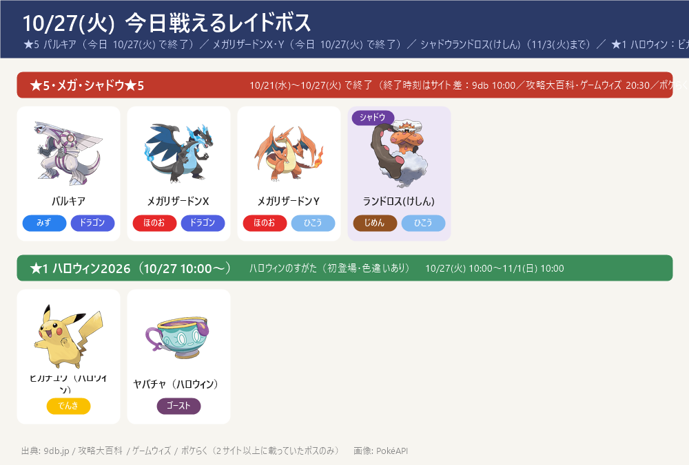
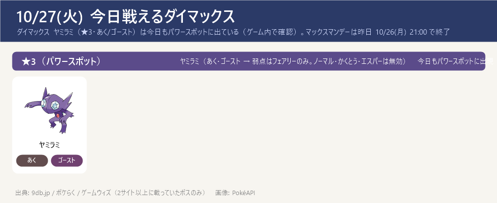
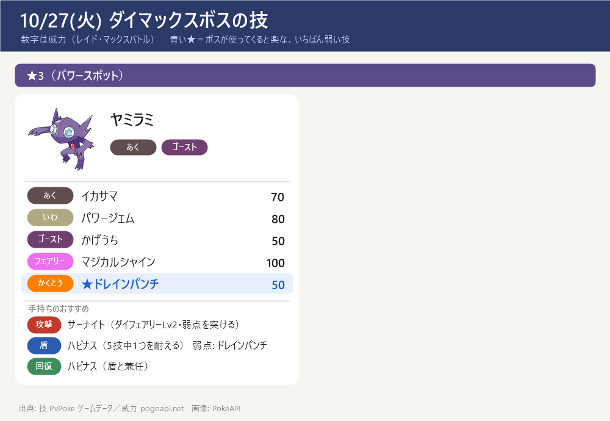

今日のポイント
- 【予約メモ】パイルのみをためる（10/29 ゴースのスポットライトアワーまであと2日）：ポケストップ・ジムでパイルのみを集め、ほかのきのみより先に使わない。ゴースのアメ集め（ゲンガーの強化）に使う
- 今日 10:00〜 ハロウィン2026 パート1 が開始（パート1は〜11/1(日) 10:00、続けてパート2 11/1(日)10:00〜11/5(木)20:00）。野生にズバット（トップハット・初登場）・ヨマワル・ポッチャマ・フワライドなどハロウィンのすがたが増える（色違いあり）。くわしくは下の「ハロウィン2026」の枠へ
- 【今日で終了】★5 パルキア と メガレイド メガリザードンX・Y は今日 10/27(火) で終了（終了時刻がサイトで食い違う：9dbは10:00、攻略大百科・ゲームウィズは20:30、ポケらくは21:00 → ゲーム内で確認を）。戦うなら今日のうちに
- ダイマックス ヤミラミ（★3・あく/ゴースト）は今日もパワースポットに出ている（ゲーム内で確認済み）。マックスマンデーは昨日 10/26(月) 21:00 で終了したが、ヤミラミは週替わりの★3プールに残っている。弱点はフェアリーのみ（ノーマル・かくとう・エスパー技は無効）。攻撃はサーナイト（ダイフェアリーLv2）、盾はハピナス。参加に400MP
- 今日（火）10:00〜20:00 おひろめデイ（毎週火曜の定例。ポケストップごとのお題で「大きさ」などを競う。同時参加は最大5か所。出したポケモンは手元に残る）
- 【締切近い】GOパス10月のポイント獲得は 11/3(火) 10:00 まで（報酬の受け取りは 11/5(木) 10:00 まで）。デラックスのキラチャーム使用期限は 11/8(日) 23:59
- 11/14(土) ダイマックス ディアルガに向けて強化を進める：カイリキー（カウンター）・ドリュウズ（マッドショット）・受けのメタグロス。マックス技の強化は 次はドリュウズ（ダイアース Lv1→Lv2）（サーナイトのダイフェアリーLv2は完了）。くわしくはダイマックス育成順ページ
東京の巣：東京の巣 10/22(木)〜11/5(木)（別ページ）
今日戦えるレイドボス
★5 パルキア（今日 10/27(火) で終了）／ メガリザードンX・Y（今日 10/27(火) で終了）／ シャドウランドロス(けしん)（11/3(火)まで）／ ★1 ハロウィン：ピカチュウ・ヤバチャ（10/27 10:00〜）
- ★5 パルキア・メガリザードンX/Y は今日 10/27(火) で終了。終了時刻がサイトで食い違う（9dbは10:00、攻略大百科・ゲームウィズは20:30、ポケらくは21:00）→ ゲーム内で確認を。翌 10/28(水) から ★5 ギラティナ(オリジン)＋メガヤミラミ に入れ替わり
- ★1のハロウィン ピカチュウ（ハット&ケープ）・ヤバチャ（リボン）は 10/27(火) 10:00 から登場（どちらも色違いあり・初登場）
- ★3・★1（通常レイド）とシャドウ★3/★1 は 2サイトで一致する確定情報が無い → 当日ゲーム内で確認を（下の「サイトで違っていた点」）

今日戦えるダイマックス
ダイマックス ヤミラミ（★3・あく/ゴースト）は今日もパワースポットに出ている（ゲーム内で確認）。マックスマンデーは昨日 10/26(月) 21:00 で終了
- マックスマンデーは昨日 10/26(月) 21:00 で終了。ただし ダイマックス ヤミラミ（★3）は週替わりの★3プールに残り、今日もパワースポットに出ている（ゲーム内で確認済み）
- ヤミラミは あく・ゴースト → 弱点はフェアリーのみ（ノーマル・かくとう・エスパー技は無効）。攻撃はサーナイト（ダイフェアリー Lv2）でフェアリーを突く。盾はハピナス（ノーマルなのでゴースト技が無効・HPで受ける）。※メタグロスはエスパーで あく・ゴースト技が2倍なので受けには使わない
- 今パワースポットに出ている★1〜★3のまとめ：今出ているダイマックスまとめを開く（★1〜★3の一覧・この後の予定）
- ダイマックス ヤミラミのくわしい攻略（受け役カード・パターン別の作戦・ソロ/人数の目安・育成価値）：攻略ページを開く
- 【各ボスのスペシャルアタック候補】（下のカード。数字はレイド・マックスバトルでの威力。★＝ボスが使ってくると楽な、いちばん弱い技（ボスと同じタイプの技は1.2倍で計算。こちらのポケモンとの相性は見ていない）。戦闘中に技名が出たら受け役を合わせる）


ハロウィン2026 パート1（今日 10:00〜）
- 期間：パート1 10/27(火) 10:00〜11/1(日) 10:00。続けてパート2 11/1(日) 10:00〜11/5(木) 20:00（攻略大百科・ゲームウィズ・ポケらくで一致）
- 野生で増える：ズバット（トップハット・初登場）・ヨマワル・ポッチャマ・フワライド など（ハロウィンのすがた。色違い対応あり＝ポケらく表記）
- レイド★1（初登場）：ピカチュウ（ハット&ケープ姿）・ヤバチャ（リボン姿）。どちらも色違いあり
- 無料タイムチャレンジ：クリアで ふしぎなアメ×6＋コスチュームピカチュウ
- ボーナス（GOパス連動）：ランク10到達で捕獲時のアメ2倍（デラックスは3倍）、ランク20到達で捕獲時のほしのすな2倍（デラックスは3倍）
- 色違い初登場：コスチュームの ピカチュウ・ズバット・ヤバチャ の3種（色違いボチはパート2で初登場＝ポケらくのみ）
サカキ対策（シャドウゼクロム）：攻略ページへ（別ページ）
締め切り・やること：まとめページへ（別ページ）
この先の予定（タップで開閉）
- 10/28(水) 6:00〜 ★5 ギラティナ(オリジン)＋メガヤミラミ（〜11/3(火)）、18:00〜19:00 レイドアワー：ギラティナ(オリジン)
- 10/29(木) 18:00〜19:00 スポットライトアワー：ゴース（進化させるとXP2倍）→ パイルのみを貯めてゲンガー用のアメ集め
- 10/31(土) 14:00〜17:00 スーパーメガレイドデイ：メガシャンデラ（初登場・色違いあり。無料レイドパス6枚＋当日最大7枚）
- 11/1(日) 10:00〜11/5(木) 20:00 ハロウィン2026 パート2
- 11/3(火) 10:00 GOパス10月のポイント獲得終了 ／ 11/5(木) 10:00 報酬受け取り終了
- 11/8(日) 23:59 GOパス10月デラックスのキラチャーム使用期限
- 11/9(月) 10:00〜 ワイルドエリア Into the Wild（攻略大百科・ゲームウィズでは「ワイルドウィーク」）開始（〜11/13(金) 20:00）：王の姿のザシアン・ザマゼンタの ★5 レイド。18:00〜19:00 レイドアワーはザシアン。GOパス デラックスを最後までクリアで ぎんのおうかん（ザシアンの攻撃特訓用）。ポイント獲得は 11/15(日) 18:00 まで
- 11/10(火) 18:00〜19:00 レイドアワー：ザマゼンタ（王の姿にする ★5 レイド）
- 11/13(金) 20:00 ワイルドエリア Into the Wild 終了（ザマゼンタを王の姿にするのは今日まで）
- 11/14(土)・15(日) GOワイルドエリア：グローバル（ダイマックス ディアルガ・パルキア）→ ボス別の攻略ページ・育成順ページ作成済み（GitHub にも公開）
- 11/15(日) 18:00 GOパス（Into the Wild デラックス）のポイント獲得終了 → ぎんのおうかん確保。報酬の受け取りは 11/17(火) 23:59、ぎんのおうかんの使用は 11/22(日) 23:59 まで
サイトで違っていた点（タップで開閉）
- ★5パルキア・メガリザードンX/Y の終了時刻: 9db は 10/27(火) 10:00、攻略大百科・ゲームウィズは 20:30、ポケらくは 21:00 と食い違う → ゲーム内で確認を（終了日が今日 10/27(火) なのは各サイト一致）
- ハロウィン2026 パート1の開始・期間: 開始 10/27(火) 10:00 は攻略大百科・ゲームウィズ・ポケらく一致。パート1終了〜パート2（11/1(日)10:00〜11/5(木)20:00）も一致。9db はパート1を1ブロックで表記する差あり
- ハロウィンの野生の顔ぶれ: 共通はズバット（初登場）・ヨマワル・ポッチャマ・フワライド（攻略大百科・ポケらく）。それ以外の細かい顔ぶれは表記差 → ゲーム内で確認を。色違いボチはパート2で初登場（ポケらくのみ）
- マックスバトルの★2/★1 一覧: 9db・ポケらくの表が JS 描画で正確に取得できず。★3 ヤミラミのみ確定（週替わりの★3プールに残存）。★1〜★3のまとめは /topics/dmax-now/ 参照、当日はゲーム内で確認を
- マックスマンデー ヤミラミの時間表記: ポケらくは 6:00〜21:00（終日）、5:00〜21:00 とする表記もありサイト差。いずれも 10/26(月) で終了済み（今日は★3プールとして出現）
- シャドウランドロス(けしん): 10/7(水)〜11/3(火) で攻略大百科・ゲームウィズ・ポケらく一致。終了時刻はポケらくのみ 21:00 明記
- 10/28〜の★5: ギラティナ(オリジン)＋メガヤミラミ（〜11/3(火)）で9db・攻略大百科・ゲームウィズ・ポケらく一致。10/28 18:00〜19:00 レイドアワー ギラティナ(オリジン) はポケらく記載
- キラチャームの期限: 攻略大百科・ゲームウィズで 11/8(日) 23:59 まで で一致（確定）。GOパスのポイント獲得終了 11/3(火) 10:00・報酬受け取り 11/5(木) 10:00 も一致
- ダイマックスボスの技候補はゲームデータ(PvPoke)から（おんがえし・やつあたりは除外）、威力は pogoapi.net
出典: 9db.jp/pokemongo（開催イベント一覧 data/4351・レイド日程 data/2308・マックスバトル日程 data/20859）／pokemon.gamepedia.jp/go（攻略大百科 今月のイベント archives/77843・10月レイド/マックス archives/120115・ハロウィン2026パート1 archives/120361・メガシャンデラ archives/120434）／pokemongo.gamewith.jp（出現中のレイドボス show/60906・ハロウィン2026 show/579894・10月スケジュール show/577622・11月スケジュール show/583244）／pokemongo-raku.com（マックスバトル出現 post95707・スポットライトアワー post20283・10月まとめ post163015）／pvpoke.com ゲームデータ（技候補）
画像: PokéAPI ／ 2サイト以上で一致した情報だけを載せています